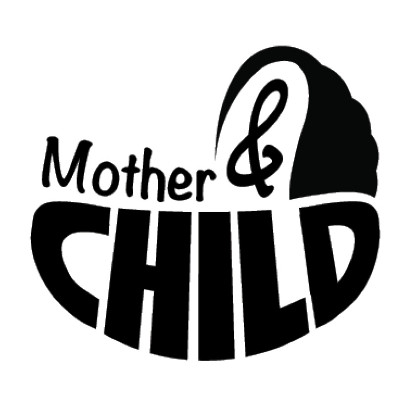
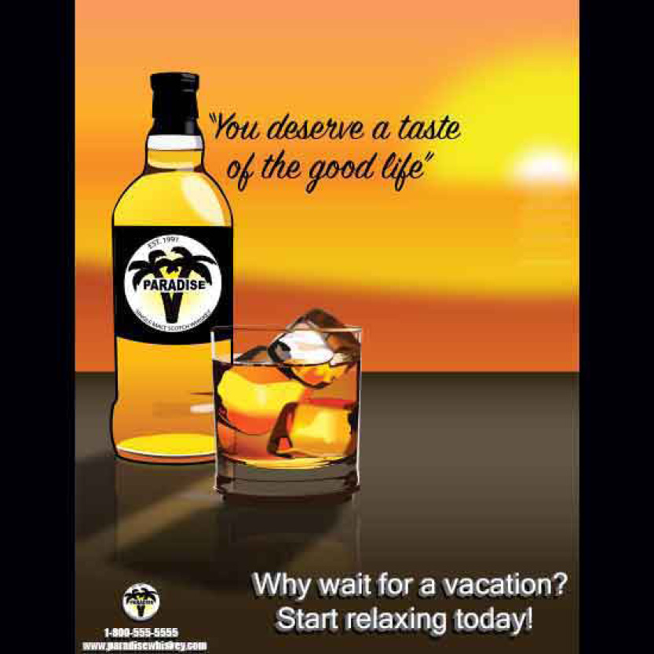

LOGOS
/POSTERS
/ALBUM ART
/VIDEOS

This logo was designed and used by Anthony Jastrow for his Instagram page while he was doing weekly videos drawing original cartoons. You can check out his works here; Instagram.com/AnthonyJastrow
This logo was was created as a student project revising an existing logo. The idea was to convey the purpose of the company with their logo mark subtly hinting toward piping.
This logo was designed to demonstrate an understanding of the Gestalt principles similarity and proximity. The similar letter forms are grouped closely together creating one unified shape which is recognizable as a baby carriage.
This logo was designed to demonstrate an understanding of the Gestalt principles figure/ground and closure. The shape of the yellow circle and black lightening bolt are created entirley in your mind through fragmented yellow lines. .

This poster was designed to express the general idea and feeling of the movie as minimally as possible. The gritty texture and subtle gun shape in his right hand elude to the violence in the film, while the empty dog leash hints at the character's motivation.
This first of a three part poster series created as if advertising The Wizard of Oz to an unfamiliar audience. The framed painting of the brave and heroic Lion is both an ironic contradiction to the characters behavior during the majority of the film and a simoultanious nod to the development of his character arc as he finds his courage throughout the story.

This second in this three part series, this poster depicts a portrait of a loving Tinman with a big heart. This poster shows the Tinman at his proudest, serving as a milirary doctor with his "heart of goodwill" plainly displayed beside him.

This third and final in the Wizard of Oz series portrays the Scarecrow as a brilliant proffesor of thinkology, being recognized for his brilliance. To anyone unfamiliar with the story these contradicing ideas would likely be intruiging then once the film has been seen would make much more sense.
This poster ad for a fictional brand of scotch was designed entirely with Adobe Illustrator. The sunset, glass, and ice cubes were all created in vector form and are fully rescalable to any size.

This poster ad for Tic Tacs was created with Modo 3d design software as well as a small portion of photoshop. The produc itself with each individual tic tac inside are all 3d rendered and can easily be moved around and viewed from any angle needed.

This poster was designed to advertise a fictional music festival, the firey imagery and barbed wire add a level of excitement and edginess to the design. The artists performing at the festival are listed in a circle drawing attention to the music label's logo in it's center.

This movie poster focuses on V, the main character of the film. The "v" shaped fireworks exploding behind him help to draw focus to the main figure and also ellude to the explosions and violence in the film. The crowd wearing identical masks plays to the character's goal throughout the film, uniting people together to stand against government corruption.

This magazine article layout was designed to demonstrate my ability to layout text and images in an interesting and engaging way. The bloody mask elludes to the violence and death in the film and the main character (played by Natalie Portman) is shown within the shadow of the antihero V. The author of the graphic novel is shown in the corner with an insert about the film's origin.

This continuation of the same article includes the iconic blade used by V in the film and on the right side his crowd of followers. Prominantly displayed bove their heads is the grafiti seen sprayed on the walls around the city in the film, glorifying the people's villainous hero.

This is the first of three designs created for singles released by the counrty music artist Matt Begley. Each depicts a silhuette of a country scene. This Sunset nods to the title of the song with a "waving" windmill as well as trees that almost look to be waving in the breeze.

This second single speaks of signing contracts on the "dotted line." The dotted line around the title plays to the nature of the song. The bright sunrise shining draws your eye to the tractor and road subtely suggesting a dotted line on a road.

This third in the series switches to a night scene tying to a night out at a local bar. The glow of the sign is reminiscent of a glowing neon sign one might find in a bar.

This album cover is for a fictional band called Soft Carnage. The idea is similar to the band Gorillaz who have cartoon characters that represent the band members, however I imagine this group's music would be much more hardcore and edgy. The blood splatter and somewhat demonic characters imply the dark edgy vibe of the music but the cartoony and playful style makes it more inviting and fun.

This design is for same album shown above, this image would be used as an insert for a cd case with the back and side panels included.
This is the inside of the same cd case above, a short paragraph about the band on the left and a creative cd design with the album name on the right.

This album design was created as a part of a marketing package for a fictional album release. The colorless rough look and empty space in the imagery emphasises the title of the album.
This is the inside panel and cd art for the same project above.

This is the song list on the back and the side panel of the cd case.

This is a poster advertising the tour dates and locations as part of the same project above. A teaser video created as part of this project can be found under the "videos" tab at the top of the page.
This stop motion animation was made by moving cut out pieces of paper on a table and taking photos from above, then layering those images together with Adobe After Effects. Additionally, I created the digital animation of the "magic" that flies around with Adobe Photoshop.
This stop motion animation and logo were created as a banner ad to advertise a childrens toy for a class project.
This video was filmed as a teaser for a fictional album release project, the album can be seen under the "Album Art" tab at the top of the page.